December 2011
12/29/2011 11:47:45
¶
●
I think that social blogging platforms like Tumblr may see a huge growth in 2012. Your designs are helping lead the way in responsive and more customisable themes.
I no longer believe in web designers taking thousands of pounds to design a small biz web presence. Social is doing more to drive traffic, and I think it can stand up as strong as seo driving new customers.
An excerpt of a Style Hatch support email we got earlier today. Small businesses need for expensive, custom designed online presence is declining as more of them turn to platforms like Tumblr, Virb, Squarespace and others.
Highly skilled and strategic web designers and studios will always deliver value to small businesses, but mediocre designers should be worried.
#ideas #tumblr #style hatch
12/29/2011 09:50:09
¶
●


The Great Wall
Rather than accepting that knowledge is simply accumulated, artist Guy Laramee views the world’s knowledge as a resource that is eroded over time. In the same way that mountains slowly erode to hills, piles of obsolete encyclopedias eventually erode from sources of knowledge to objects that simply exist.
View more of Guy Laramee’s carved book art and landscape paintings at his site - guylaramee.com
#art #knowledge #books
12/27/2011 11:43:07
¶
●
I Am Always Hungry - Short Reel
Inspiring new design and motion demo reel from multi-disciplinary design studio IAAH lead by Nessim Higson.
#design #motion #agency
12/24/2011 12:00:05
¶
●
When the song of the angels is stilled, When the star in the sky is gone, When the kings and princes are home, When the shepherds are back with their flock, The work of Christmas begins: To find the lost, To heal the broken, To feed the hungry, To release the prisoner, To rebuild the nations, To bring peace among others, To make music in the heart.
Howard Thurman
#ideas #good #Christmas
12/19/2011 12:38:29
¶
●
Penman Theme
Earlier this morning we just submitted Penman as our thirteenth premium Tumblr theme. With an oversized layout and a focus on typographical details it’s a perfect fit for those of you who want to post high resolution images and videos as well as longer text posts. Along with all our other Style Hatch themes, Penman is completely responsive with a layout that adapts from large resolution monitors down to tablets and smartphones.
On a more technical side, this theme was our first to experiment with combining the HTML5 History API with infinite scrolling. As you load additional pages through infinite scrolling you will notice that the URL updates (penmantheme.tumblr.com/page/2). This allows you to hit back on your browser and pick up where you left off if you click a link off from the blog.
To get an idea of how flexible Penman is, check out our alternate demo site Penman Dark featuring an all dark appearance.
If you have any questions about Penman feel free to email us at penman@stylehatch.co
#tumblr #themes #style hatch
12/16/2011 09:15:36
¶
●
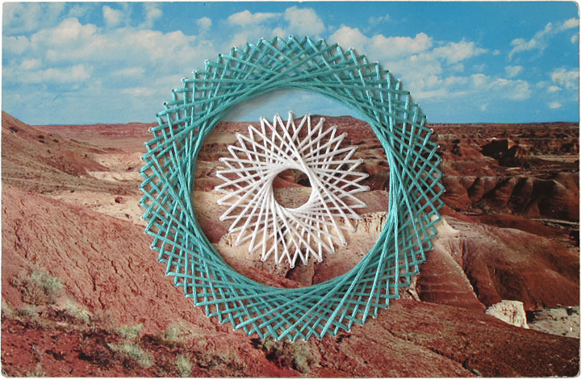
Conformations No. 3
Hand embroidered, oversized postcards by mixed-media artist Shaun Kardinal. Best of all Shaun is on Tumblr and frequently posts his handmade creations—go follow him!
#design #art #handmade #vintage
12/15/2011 12:50:00
¶
●
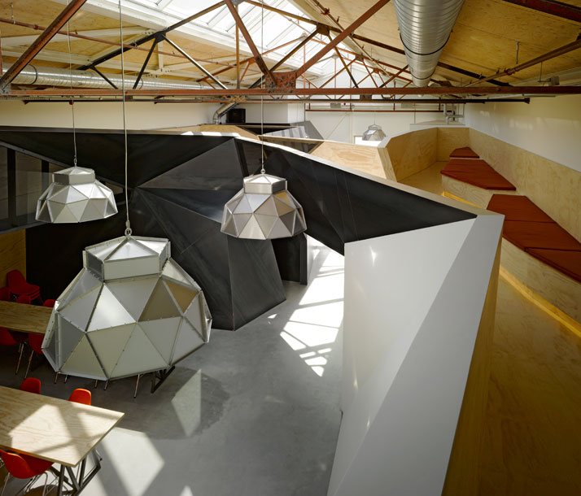
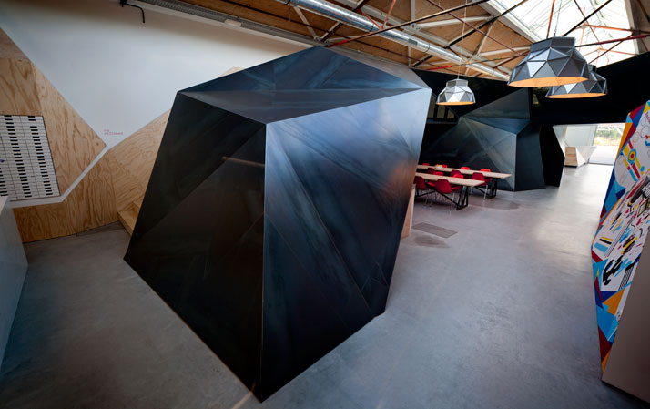
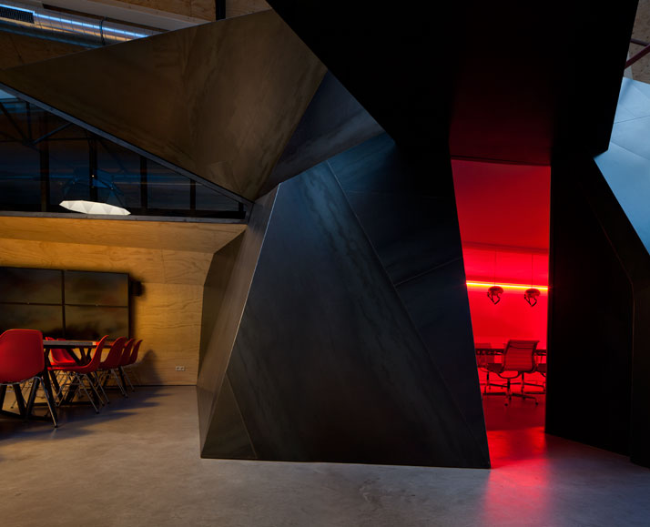
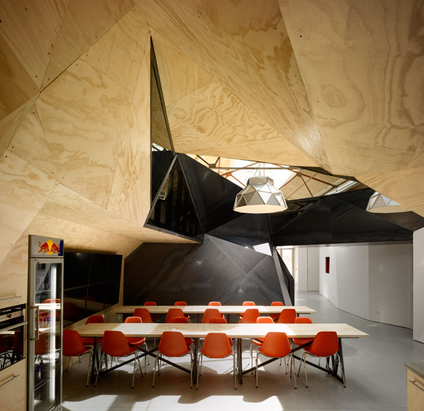
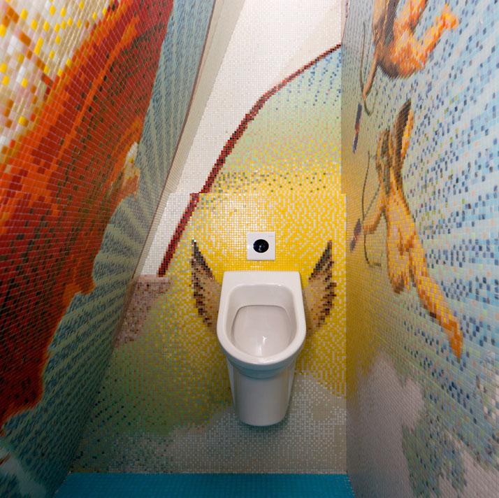
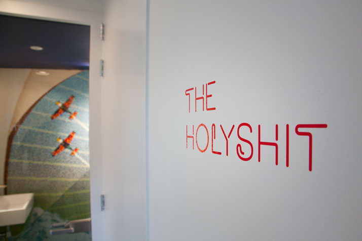
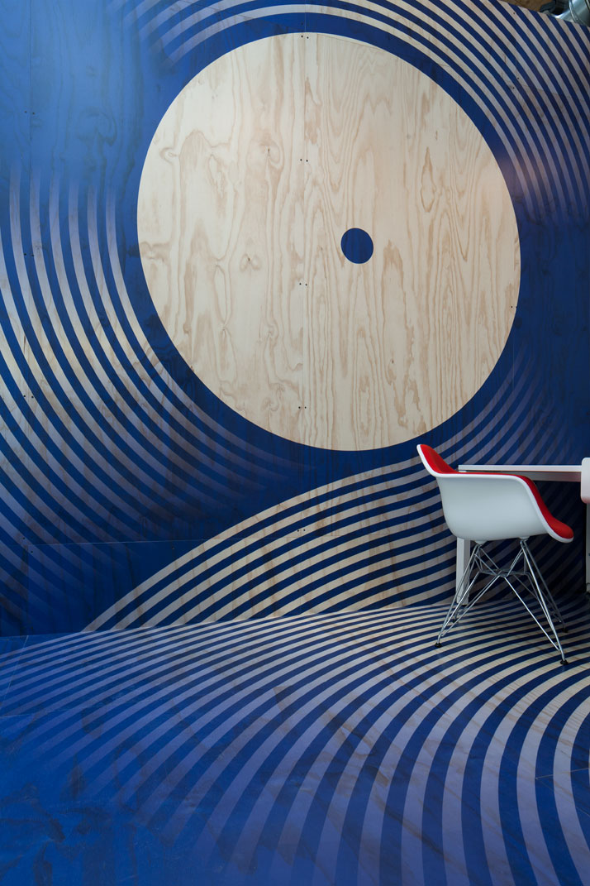
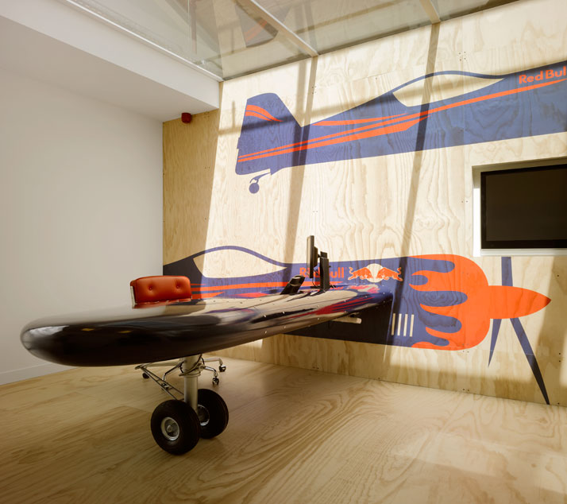
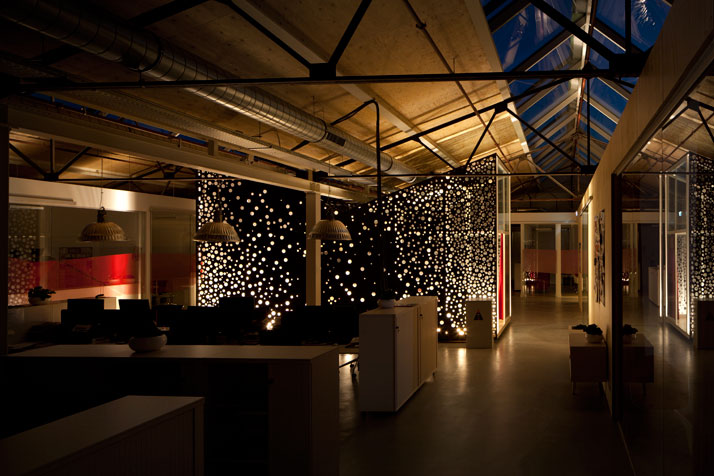
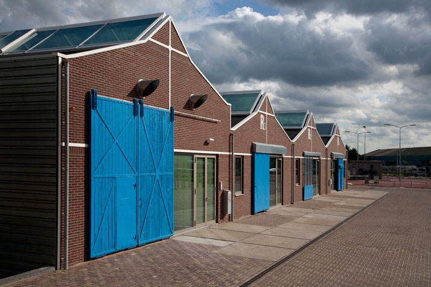
Redbull Amsterdam HQ
Filled with wall-to-wall polygons, Sid Lee Architecture transformed the old shipbuilding factory into a new and creative headquarters for Redbull Amsterdam. Using a juxtaposition of ideas—light vs dark, arts vs industry—the new headquarters is a perfect fit for the Redbull brand and location.
See more images and details on the space at Yatzer’s full article on Redbull’s Amsterdam HQ. Photography by Ewout Huibers
Additional post featuring Sid Lee’s work - Bota Bota
#design #architecture #redbull
12/13/2011 14:32:11
¶
●
Melancholy shouldn’t be confused with depression. Melancholy is an active state. When we’re melancholic, we feel uneasy with the way things are, the status quo, the conventions of our society. We yearn for a deeper, richer relationship with the world. And in that yearning, we’re forced to explore the potential within ourselves – a potential we might not have explored if we were simply content. We come up with new ways of seeing the world and new ways of being in the world. Melancholy and creativity go together.
Alexander Stutterheim, post on Melancholy & Creativity
#ideas #creativity
12/07/2011 10:12:58
¶
●
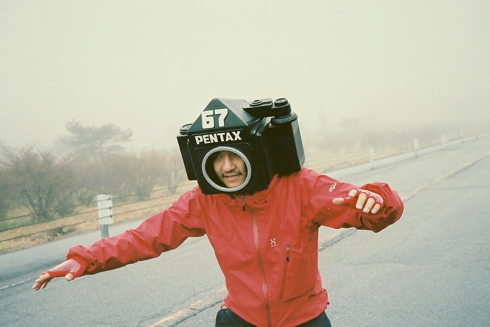
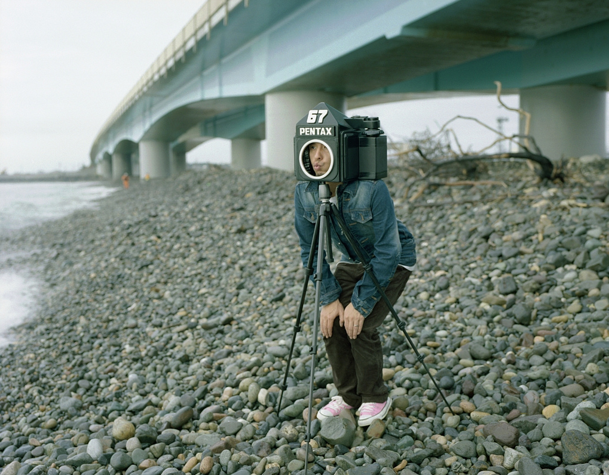
Monstor67
A series of funnyism shots by photographer kiyoshimachine. See the full Monstor67 series on Flickr.
#photography #pentax #Japan #lol
12/05/2011 15:16:00
¶
●
Color 2.0
Color is a live broadcast from your phone. Unlike videos, there’s no audio, editing, or uploading. You got 30 seconds to tell your story. Up to 5,000 friends can simultaneously visit your broadcast from their phone and Facebook.
So after rehashing the complete flop of the first version of Color, they’re putting their $41,000,000 in funding to use to launch a platform to broadcast 30 seconds of boring, soundless video to Facebook. Isn’t audio half the magic of video?
#tech #startup
12/05/2011 09:55:32
¶
●
Designing a product is keeping five thousand things in your brain and fitting them all together in new and different ways to get what you want. And every day you discover something new that is a new problem or a new opportunity to fit these things together a little differently.
And it’s that process that is the magic.
Steve Jobs
#ideas #design
Index